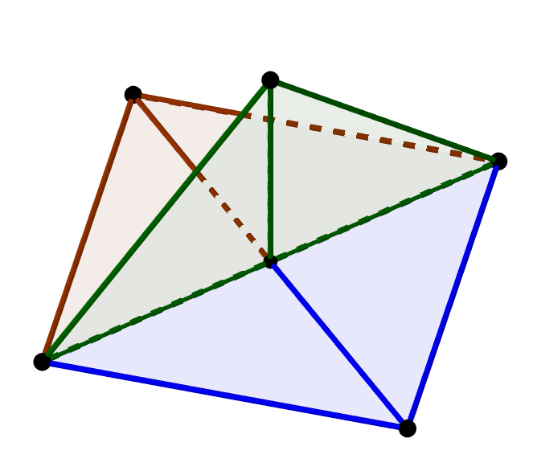
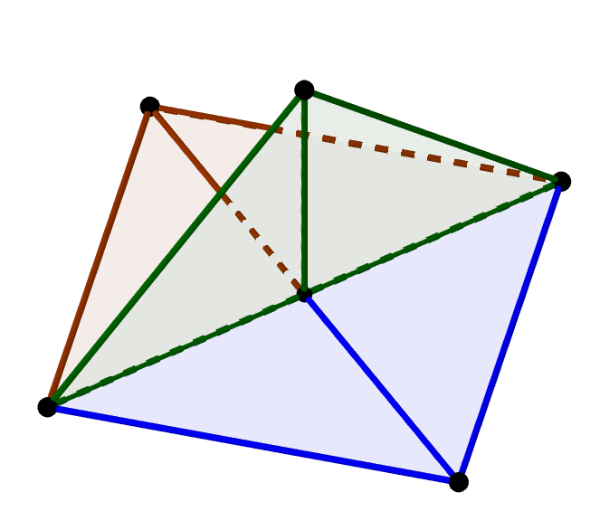

Matching Graphs
From Fall of 2019 to Summer 2021, I worked on a research project about matching complexes of graphs with Bennet Goeckner, Legrand Jones, and Rowan Rowlands. We considered two questions about matching complexes which became two projects each with their own paper.
In the first project, we consider any given graph under repetition of the jump graph operation. We prove that there are only two graphs which return themselves for every jump graph and all others either reach the empty set or grow in size without bound. Our paper, Iterated Jump Graphs, presents these results. It has been published in the Rose-Hulman Undergraduate Journal.

In the second project, we characterize all graphs whose matching complex is a two-dimensional Buchsbaum complexes. The paper, A characterization of two-dimensional Buchsbaum matching complexes is published in the Electronic Journal of Combinatorics.
 
